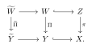

Example 8.1.1. Consider the case where $\varphi $ has log-log singularities as in example 3.1.14. Locally we can take $\varphi (z)=-\log (-\log |z|^2)$. We have $\nu (\varphi ,0)=0$ but $\varphi |_0=-\infty $. So the naive restriction is not defined in this case.
17.2 The trace operator
8 The trace operator
The goal of this chapter is to give a meaning to the restriction of a quasi-psh singularity to a subvariety. If $\varphi \in \mathrm{QPSH}(X)$ and $Y\subseteq X$ is a subvariety, the naive restriction $\varphi |_ Y$ is often unsatisfactory: it may be identically $-\infty $, or it may fail to preserve quasi-equisingular approximations.
There is a useful analogy with the trace operator in real analysis. A Sobolev function on a domain cannot, in general, be restricted pointwise to the boundary; instead, it admits a trace obtained by approximation using smooth functions, and the trace is well-defined modulo almost everywhere equality. 8 summarizes the corresponding dictionary.
Real analysis | Pluripotential theory |
smooth functions | potentials with analytic singularities |
Sobolev functions | potentials with $\mathcal I$-good singularities |
Sobolev convergence | $d_ S$-convergence |
equality almost everywhere | $P$-equivalence |
Table 8.1 A dictionary for the trace operator.
The situation here is similar. A singular quasi-psh function need not have a meaningful pointwise restriction to $Y$, but after replacing it by quasi-equisingular approximants and passing to the appropriate $d_ S$-limit of the pointwise restriction of these approximants to $Y$, one obtains a well-defined $P$-singularity type. This is the trace $\operatorname{Tr}_ Y(\varphi )$.
The trace operator is designed to be compatible with the two comparison theories developed earlier. It depends only on the $\mathcal{I}$-singularity type of $\varphi $, and itself is well-defined modulo $P$-equivalence.
The first part of the chapter defines the trace and proves its basic properties: independence of the quasi-equisingular approximation, monotonicity, linearity, compatibility with bimeromorphic pullback, and continuity under decreasing $d_ S$-limits. These results provide the analytic foundation for later applications.
The second part relates the trace operator to restricted volumes. For a big class $\alpha $ and a subvariety $Y$ not contained in the non-Kähler locus, the classical restricted volume $\operatorname{vol}_{X|Y}(\alpha )$ can be expressed as the non-pluripolar volume of the trace of a potential with minimal singularities. We also prove an asymptotic Riemann–Roch formula for the restricted multiplier ideal sheaves.
The final part develops analytic Bertini-type statements. These results describe when multiplier ideals restrict correctly to a general hypersurface and when $\mathcal I$-goodness is preserved under restriction.
8.1 The definition of the trace operator
Let $X$ be a connected compact Kähler manifold and $Y\subseteq X$ be an irreducible analytic subset.
The trace operator gives a way to restrict a quasi-plurisubharmonic function on $X$ to $\widetilde{Y}$, the normalization of $Y$. It follows from [Proposition 3.6, GK20] that $\widetilde{Y}$ is a normal Kähler space. We refer to chapter B for the pluripotential theory on unibranch Kähler spaces.
For later applications, we need this generality even if initially we are only interested in the smooth case.
Before diving into the trace operator, let us try to understand what goes wrong with the naive restriction procedure: simply take $\varphi |_{\widetilde{Y}}$. Both examples below are local, but can easily be globalized since the singularities are isolated.Example 8.1.2. Consider a psh function $\varphi $ in two variables, say
\[ \varphi (z,w)=\left( -\log (-\log |z|^2)\right) \lor \left(\log |w|^2\right). \]
Take an arbitrary quasi-equisingular approximation $(\varphi _ j)_ j$. Then each $\varphi _ j$ is locally bounded since $\nu (\varphi ,(0,0))=0$. Let us consider the restrictions to $H=\{ z=0\} $. Then $\varphi _ j|_ H$ is still bounded, while
\[ \varphi |_ H(w)=\log |w|^2. \]
In other words, the restrictions $\varphi _ j|_ H$ fail to be a quasi-equisingular approximation of $\varphi |_ H$.
We first observe that if $\varphi \in \mathrm{QPSH}(X)$ has analytic singularities and $\nu (\varphi ,Y)=0$, then $\varphi |_ Y\not\equiv -\infty $. Indeed, if $\varphi |_ Y\equiv -\infty $, then in a local presentation
\[ \varphi =c\log (|f_1|^2+\cdots +|f_ N|^2)+\mathcal{O}(1) \]
all generators $f_1,\ldots ,f_ N$ vanish along $Y$, which gives $\nu (\varphi ,Y)>0$, a contradiction.
This observation will be crucial in the sequel.
Proposition 8.1.3. Let $\varphi \in \mathrm{QPSH}(X)$ be a function such that $\nu (\varphi ,Y)=0$. Let $(\varphi _ i)_ i$, $(\psi _ i)_ i$ be quasi-equisingular approximations of $\varphi $. Then
8.1
\begin{equation} \lim _{i\to \infty } d_ S\left(\varphi _ i|_{\widetilde{Y}},\psi _ i|_{\widetilde{Y}}\right)=0. \end{equation}
Proof. After subtracting a common constant from $\varphi $, $\varphi _ i$ and $\psi _ i$, we may assume that $\varphi _ i\leq 0$ for all $i\geq 1$.
Take a Kähler form $\omega $ on $X$ such that $\varphi _ i,\psi _ i\in \mathrm{PSH}(X,\omega /2)$ for all $i\geq 1$. By corollary 6.2.19, we need to show that
\[ \lim _{i\to \infty } d_{S,\omega |_{\widetilde{Y}}}\left(\varphi _ i|_{\widetilde{Y}},\psi _ i|_{\widetilde{Y}}\right)=0. \]
Assume that this fails. Then, up to replacing the sequences by subsequences, we may assume that the following limit exists and
\[ \lim _{i\to \infty } d_{S,\omega |_{\widetilde{Y}}}\left(\varphi _ i|_{\widetilde{Y}},\psi _ i|_{\widetilde{Y}}\right)>0. \]
Take a Kähler form $\tilde{\omega }$ on $\widetilde{Y}$. Then
\[ \lim _{i\to \infty } d_{S,\omega |_{\widetilde{Y}}+\tilde{\omega }}\left(\varphi _ i|_{\widetilde{Y}},\psi _ i|_{\widetilde{Y}}\right)>0 \]
by corollary 6.2.19.
By corollary 7.1.10, after changing the background class from $\omega /2$ to $\omega $ if necessary, we have
\[ \varphi _ i\xrightarrow {d_ S}P_{\omega }[\varphi ]_{\mathcal I},\quad \psi _ i\xrightarrow {d_ S}P_{\omega }[\varphi ]_{\mathcal I}. \]
Let
\[ \chi _ i\coloneqq \varphi _ i\lor \psi _ i. \]
By proposition 6.2.23, we have $\chi _ i\xrightarrow {d_ S} P_{\omega }[\varphi ]_{\mathcal{I}}$. Moreover, $(\chi _ i)_ i$ is again a quasi-equisingular approximation of the original potential $\varphi $ as follows from corollary 7.1.10.
The triangle inequality gives
\[ d_ S(\varphi _ i|_{\widetilde{Y}},\psi _ i|_{\widetilde{Y}}) \leq d_ S(\varphi _ i|_{\widetilde{Y}},\chi _ i|_{\widetilde{Y}})+ d_ S(\psi _ i|_{\widetilde{Y}},\chi _ i|_{\widetilde{Y}}). \]
Thus, after passing to a subsequence and interchanging the two quasi-equisingular approximations if necessary, we may assume that
\[ \varliminf _{i\to \infty }d_ S(\varphi _ i|_{\widetilde{Y}},\chi _ i|_{\widetilde{Y}})>0. \]
Replacing $(\psi _ i)_ i$ by $(\chi _ i)_ i$, we may therefore assume that
\[ \varphi _ i\leq \psi _ i \]
for all $i$, while preserving the contradiction assumption.
Take a decreasing sequence $(\epsilon _ j)_ j$ in $\mathbb {R}_{>0}$ with limit $0$ such that $(1-\epsilon _ j)\varphi _ j\in \mathrm{PSH}(X,\omega )$. We first observe that
\[ \lim _{i\to \infty } d_{S,\omega |_{\widetilde{Y}}}\left(\varphi _ i|_{\widetilde{Y}},(1-\epsilon _ i)\varphi _ i|_{\widetilde{Y}}\right)=0. \]
This is a consequence of 6.2.14. Hence, by corollary 6.2.19, we find
\[ \lim _{i\to \infty } d_{S,\omega |_{\widetilde{Y}}+\tilde{\omega }}\left(\varphi _ i|_{\widetilde{Y}},(1-\epsilon _ i)\varphi _ i|_{\widetilde{Y}}\right)=0. \]
Since $(\varphi _ i)_ i$ and $(\epsilon _ i)_ i$ are decreasing and $\varphi _ i\leq 0$, the sequence $\bigl ((1-\epsilon _ i)\varphi _ i|_{\widetilde{Y}}\bigr )_ i$ is decreasing. It has uniformly positive mass in the class $\omega |_{\widetilde{Y}}+\tilde{\omega }$. Hence corollary 6.2.13, together with the preceding estimate, gives a potential $\psi \in \mathrm{PSH}(\widetilde{Y},\omega |_{\widetilde{Y}}+\tilde{\omega })$ such that
\[ \varphi _ i|_{\widetilde{Y}}\xrightarrow {d_ S}\psi . \]
Hence,
\[ \lim _{i\to \infty } d_{S,\omega |_{\widetilde{Y}}+\tilde{\omega }}\left(\psi ,(1-\epsilon _ i)\varphi _ i|_{\widetilde{Y}}\right)=0. \]
By proposition 1.6.11, after choosing $j_ i$ inductively with $j_ i\geq i$ and $j_ i>j_{i-1}$, we may assume that
\[ \psi _{j_ i}\preceq (1-\epsilon _ i)\varphi _ i. \]
Since we have arranged $\varphi _ j\leq \psi _ j$ for all $j$, it follows that
\[ \varphi _{j_ i}\leq \psi _{j_ i}\preceq (1-\epsilon _ i)\varphi _ i. \]
Hence,
\[ \varphi _{j_ i}|_{\widetilde{Y}}\leq \psi _{j_ i}|_{\widetilde{Y}}\preceq (1-\epsilon _ i)\varphi _ i|_{\widetilde{Y}}. \]
Therefore, by corollary 6.2.6,
\[ \begin{aligned} \varlimsup _{i\to \infty } d_{S,\omega |_{\widetilde{Y}}+\tilde{\omega }}\left(\varphi _{j_ i}|_{\widetilde{Y}},\psi _{j_ i}|_{\widetilde{Y}}\right) \leq & \varlimsup _{i\to \infty } d_{S,\omega |_{\widetilde{Y}}+\tilde{\omega }}\left(\varphi _{j_ i}|_{\widetilde{Y}},(1-\epsilon _ i)\varphi _ i|_{\widetilde{Y}}\right)\\ =& \varlimsup _{i\to \infty } d_{S,\omega |_{\widetilde{Y}}+\tilde{\omega }}\left(\psi ,(1-\epsilon _ i)\varphi _ i|_{\widetilde{Y}}\right)\\ = & 0, \end{aligned} \]
which is a contradiction. $\square$
8.5
\begin{equation} \varphi _ j|_{\widetilde{Y}}\xrightarrow {d_ S}\psi \footnotemark . \end{equation}
Later on in theorem 12.3.14, we shall prove that the trace operator corresponds to the natural way of restricting convex bodies in the toric setting.
Proposition 8.1.5. Let $\varphi \in \mathrm{QPSH}(X)$ such that $\nu (\varphi ,Y)=0$. Suppose that $\psi $ and $\psi '$ are trace operators of $\varphi $ along $Y$. Then $\psi $ and $\psi '$ are $\mathcal{I}$-good and $\psi \sim _ P\psi '$.
Proof. The restrictions of the analytic approximants have analytic singularities on $\widetilde{Y}$, so the claim follows from theorem 7.1.1. The fact that $\psi \sim _ P\psi '$ follows from proposition 8.1.3 and proposition 6.2.4. $\square$
Example 8.1.6.As a trivial example, when $Y$ is just a single point, then $\mathrm{QPSH}(Y)$ is canonically identified with $\mathbb {R}$. Any constant $c\in \mathbb {R}$ is a trace operator of a function $\varphi \in \mathrm{QPSH}(X)$ satisfying $\nu (\varphi ,Y)=0$.
Definition 8.1.7. Let $\varphi \in \mathrm{QPSH}(X)$ such that $\nu (\varphi ,Y)=0$. We write $\operatorname{Tr}_{Y}(\varphi )$ for any trace operator of $\varphi $ along $Y$.
Given a closed smooth real $(1,1)$-form $\theta $ on $X$. When $\operatorname{Tr}_ Y(\varphi )$ can be chosen to lie in $\mathrm{PSH}(\widetilde{Y},\theta |_{\widetilde{Y}})_{>0}$, we write
\[ \operatorname{Tr}_ Y^{\theta }(\varphi )\coloneqq P_{\theta |_{\widetilde{Y}}}\bigl [ \operatorname{Tr}_ Y(\varphi ) \bigr ]=P_{\theta |_{\widetilde{Y}}}\bigl [ \operatorname{Tr}_ Y(\varphi ) \bigr ]_{\mathcal{I}}. \]
Remark 8.1.8. As in 1.7.5, the trace operator could also be applied to closed positive $(1,1)$-currents on $X$. If $T\in \mathcal{Z}_+(X,\alpha )$ for some pseudo-effective class $\alpha $ on $X$ (see definition 1.7.3) and $\beta \in \mathrm{H}^{1,1}(\widetilde{Y},\mathbb {R})$, then we write
\[ \operatorname{Tr}^{\beta }_ Y(T) \]
for any (if exists) closed positive $(1,1)$-current in $\beta $ representing $\operatorname{Tr}_ Y(T)$ when $\nu (T,Y)=0$.
Proposition 8.1.9. Let $\varphi \in \mathrm{QPSH}(X)$ such that $\nu (\varphi ,Y)=0$. Assume that $\varphi |_ Y\not\equiv -\infty $. Then
\[ \varphi |_{\widetilde{Y}}\preceq _ P \operatorname{Tr}_ Y(\varphi ). \]
Proof. Take a Kähler form $\omega $ such that $\omega _{\varphi }$ is a Kähler current. Let $(\varphi _ j)_{j>0}$ be a quasi-equisingular approximation of $\varphi $ in $\mathrm{PSH}(X,\omega )_{>0}$. We may assume that $\varphi _ j\leq 0$ for all $j\geq 1$.
Then
8.6
\begin{equation} \varphi _ j|_{\widetilde{Y}}\leq P_{\omega |_{\widetilde{Y}}}\left[\varphi _ j|_{\widetilde{Y}}\right] \end{equation}
for all $j\geq 1$. In particular,
\[ \varphi |_{\widetilde{Y}}\leq \inf _{j\geq 1}P_{\omega |_{\widetilde{Y}}}\left[\varphi _ j|_{\widetilde{Y}}\right]. \]
Thanks to corollary 6.2.11,
8.7
\begin{equation} \operatorname{Tr}_ Y(\varphi )\sim _ P \inf _{j\geq 1} P_{\omega |_{\widetilde{Y}}}[\varphi _ j|_{\widetilde{Y}}]. \end{equation}
We conclude our assertion. $\square$
Example 8.1.10. Let $\varphi \in \mathrm{QPSH}(X)$ such that $\nu (\varphi ,Y)=0$. Assume that $\varphi $ has analytic singularities. Then
\[ \operatorname{Tr}_ Y(\varphi )\sim _ P \varphi |_{\widetilde{Y}}. \]
Example 8.1.11. Let $\varphi \in \mathrm{QPSH}(X)$. Take a closed real smooth $(1,1)$-form $\theta $ on $X$ such that $\varphi \in \mathrm{PSH}(X,\theta )_{>0}$, then
\[ \operatorname{Tr}_ X(\varphi )\sim _ P P_{\theta }[\varphi ]_{\mathcal{I}},\quad \operatorname{Tr}^{\theta }_ X(\varphi ) = P_{\theta }[\varphi ]_{\mathcal{I}}. \]
In particular, the trace operator can be regarded as a generalization of the $\mathcal{I}$-envelope.
Example 8.1.12. Assume that $\varphi \in \mathrm{PSH}(X,\theta )$ for some closed smooth real $(1,1)$-form $\theta $ on $X$, $\nu (\varphi ,Y)=0$ and
8.8
\begin{equation} \lim _{\epsilon \searrow 0} \int _{\widetilde{Y}} \left( \theta |_{\widetilde{Y}} +\epsilon \omega |_{\widetilde{Y}}+\mathrm{dd}^{\mathrm{c}}\operatorname{Tr}_ Y^{\theta +\epsilon \omega }(\varphi )\right)^{\dim Y} >0 \end{equation}
for any arbitrary choice of a Kähler form $\omega $ on $X$. Then it follows from proposition 3.1.26 that $\operatorname{Tr}_ Y^{\theta }(\varphi )$ is defined, and its mass is exactly the above limit.
As a consequence, we have the following formula:
8.9
\begin{equation} \int _{\widetilde{Y}} \left(\theta |_{\widetilde{Y}}+\mathrm{dd}^{\mathrm{c}}\operatorname{Tr}_ Y^{\theta }(\varphi )\right)^{\dim Y}=\lim _{\epsilon \searrow 0} \int _{\widetilde{Y}} \left( \theta |_{\widetilde{Y}} +\epsilon \omega |_{\widetilde{Y}}+\mathrm{dd}^{\mathrm{c}}\operatorname{Tr}_ Y^{\theta +\epsilon \omega }(\varphi )\right)^{\dim Y}, \end{equation}
where the left-hand side is understood as $0$ if $\operatorname{Tr}_ Y^{\theta }(\varphi )$ is not defined.
Remark 8.1.13. The trace operator allows us to introduce the following extension of the moving Seshadri constant. For $T\in \mathcal{Z}_+(X,\alpha )$ and $x\in X$, define
\[ \epsilon (T,x)\coloneqq \inf _{V\ni x}\left(\frac{\operatorname{vol}\operatorname{Tr}_ V^{\alpha |_{\widetilde{V}}} T}{\operatorname{mult}_ x V} \right)^{\frac{1}{\dim V}}, \]
where $\operatorname{vol}\operatorname{Tr}_ V^{\alpha |_{\widetilde{V}}} T=0$ if $\operatorname{Tr}_ V^{\alpha |_{\widetilde{V}}} T$ is not defined. Here $V$ runs over all positive-dimensional closed irreducible analytic subsets of $X$ containing $x$.
These moving Seshadri constants seem to be new. But since I do not have particularly good applications in mind, I will not study these objects in this book.
8.2 Properties of the trace operator
Let $X$ be a connected compact Kähler manifold and $Y\subseteq X$ be an irreducible analytic subset.
We prove a few elementary properties of the trace operator.Proposition 8.2.1. Let $\varphi ,\psi \in \mathrm{QPSH}(X)$, $\lambda >0$. Assume that $\nu (\varphi ,Y)=\nu (\psi ,Y)=0$. Then we have the following:
Suppose that $\varphi \preceq _{\mathcal{I}}\psi $. Then $\operatorname{Tr}_ Y(\varphi )\preceq _ P \operatorname{Tr}_ Y(\psi )$.
We have
\[ \operatorname{Tr}_ Y(\varphi +\psi )\sim _ P \operatorname{Tr}_ Y(\varphi )+\operatorname{Tr}_ Y(\psi ). \]We have
\[ \operatorname{Tr}_ Y(\lambda \varphi )\sim _ P \lambda \operatorname{Tr}_ Y(\varphi ). \]We have
\[ \operatorname{Tr}_ Y(\varphi \lor \psi )\sim _ P \operatorname{Tr}_ Y(\varphi )\lor \operatorname{Tr}_ Y(\psi ). \]
Proof. Take a closed smooth real $(1,1)$-form $\theta $ on $X$ such that $\theta _{\varphi }$, $\theta _{\psi }$ are both Kähler currents. Let $(\varphi _ j)_ j$ and $(\psi _ j)_ j$ be quasi-equisingular approximations of $\varphi $ and $\psi $ in $\mathrm{PSH}(X,\theta )$ respectively. We may assume that $\varphi _ j\leq 0$ and $\psi _ j\leq 0$ for all $j\geq 1$.
1 We choose the quasi-equisingular approximations compatibly. By theorem 1.6.10, we may take $\varphi _ j$ and $\psi _ j$ with analytic singularities of types
\[ \left(2^{-j},\mathcal I(2^ j\varphi )\right), \quad \left(2^{-j},\mathcal I(2^ j\psi )\right), \]
respectively. Since $\varphi \preceq _{\mathcal I}\psi $, we have
\[ \mathcal I(2^ j\varphi )\subseteq \mathcal I(2^ j\psi ) \]
for every $j$. Hence $\varphi _ j\preceq \psi _ j$ for every $j$. Restricting to $\widetilde{Y}$, we get $\varphi _ j|_{\widetilde{Y}}\preceq \psi _ j|_{\widetilde{Y}}$. Passing to the $d_ S$-limits by proposition 6.2.24, we obtain
\[ \operatorname{Tr}_ Y(\varphi )\preceq _ P\operatorname{Tr}_ Y(\psi ). \]
Restricting to $\widetilde{Y}$ and passing to the $d_ S$-limits by proposition 6.2.24, we obtain
\[ \operatorname{Tr}_ Y(\varphi )\preceq _ P \operatorname{Tr}_ Y(\psi ). \]
2 It follows from theorem 6.2.25 that $\varphi _ j+\psi _ j\xrightarrow {d_ S}P_{\theta }[\varphi ]_{\mathcal{I}}+P_{\theta }[\psi ]_{\mathcal{I}}$. However, by proposition 3.2.16 and proposition 7.2.1, we have
\[ P_{\theta }[\varphi ]_{\mathcal{I}}+P_{\theta }[\psi ]_{\mathcal{I}}\sim _ P P_{2\theta }[\varphi +\psi ]_{\mathcal{I}}. \]
Therefore, by proposition 6.2.4, corollary 7.1.10 and proposition 1.6.2, $(\varphi _ j+\psi _ j)_ j$ is a quasi-equisingular approximation of $\varphi +\psi $. We conclude using theorem 6.2.25.
3 Let $(\lambda _ j)_ j$ be an increasing sequence of positive rational numbers with limit $\lambda $. Then $(\lambda _ j\varphi _ j)_ j$ is a quasi-equisingular approximation of $\lambda \varphi $. Since $\lambda _ j/\lambda \to 1$, 6.2.14 gives
\[ d_ S\left((\lambda _ j/\lambda )\varphi _ j|_{\widetilde{Y}},\varphi _ j|_{\widetilde{Y}}\right)\to 0. \]
After scaling the background class, 6.2.22 shows that $\lambda _ j\varphi _ j|_{\widetilde{Y}}$ and $\lambda \varphi _ j|_{\widetilde{Y}}$ have the same $d_ S$-limit. The assertion follows.
4 By proposition 6.2.23, we have
\[ \varphi _ j\lor \psi _ j\xrightarrow {d_ S} P_{\theta }[\varphi ]_{\mathcal{I}}\lor P_{\theta }[\psi ]_{\mathcal{I}}. \]
By proposition 3.2.16 and proposition 7.2.1, we have
\[ P_{\theta }[\varphi ]_{\mathcal{I}}\lor P_{\theta }[\psi ]_{\mathcal{I}}\sim _ P P_{\theta }[\varphi \lor \psi ]_{\mathcal{I}}. \]
Therefore, our assertion follows exactly as in the proof of 2. $\square$
Proposition 8.2.2. Let $(\varphi _ j)_{j\in I}$ be a decreasing net in $\mathrm{QPSH}(X)$. Assume that there exists a closed real smooth $(1,1)$-form $\theta $ such that $\varphi _ j\in \mathrm{PSH}(X,\theta )$ for each $j\in I$. Assume that $\varphi _ j\xrightarrow {d_ S}\varphi \in \mathrm{QPSH}(X)$ and $\nu (\varphi ,Y)=0$. Then
\[ \operatorname{Tr}_ Y(\varphi _ j)\xrightarrow {d_ S}\operatorname{Tr}_ Y(\varphi ). \]
Proof. It is enough to prove the sequential assertion. Indeed, suppose that the net statement fails. Then there is $\delta >0$ such that for every $i_0\in I$ one can find $i\geq i_0$ with
\[ d_ S(\operatorname{Tr}_ Y(\varphi _ i),\operatorname{Tr}_ Y(\varphi ))\geq \delta . \]
Using also $\varphi _ i\xrightarrow {d_ S}\varphi $, we may choose an increasing sequence $i_ j\in I$ such that
\[ d_ S(\varphi _{i_ j},\varphi )<j^{-1},\quad d_ S(\operatorname{Tr}_ Y(\varphi _{i_ j}),\operatorname{Tr}_ Y(\varphi ))\geq \delta . \]
The sequence $(\varphi _{i_ j})_ j$ is decreasing and converges to $\varphi $ in $d_ S$, contradicting the sequential assertion.
Thus we assume that $(\varphi _ j)_{j\geq 1}$ is a decreasing sequence and that $\varphi _ j\xrightarrow {d_ S}\varphi $.
Take a Kähler form $\omega $ on $X$ so that $\varphi _ j,\varphi \in \mathrm{PSH}(X,\omega )_{>0}$. Replacing $\varphi _ j$ by $P_{\omega }[\varphi _ j]$, we may then assume that $(\varphi _ j)_ j$ is a decreasing sequence of model potentials. By proposition 6.2.26, we have
\[ P_{\omega }[\varphi ]=\inf _{j\geq 1}\varphi _ j. \]
By proposition 6.2.4, we may assume from now on that
\[ \varphi =\inf _{j\geq 1}\varphi _ j. \]
After adding a Kähler form to $\omega $, we may assume that $\omega _{\varphi }$ is a Kähler current.
For each $j\geq 1$, choose a quasi-equisingular approximation $(\varphi _ j^ k)_{k\geq 1}$ of $\varphi _ j$ in $\mathrm{PSH}(X,\omega )$. Using the standard construction in theorem 1.6.10, we may choose these approximations compatibly in $j$, so that for each fixed $k$,
\[ \varphi _{j+1}^ k\preceq \varphi _ j^ k \]
We shall choose an increasing sequence of integers $k_ j$ and put
\[ \eta _ j\coloneqq \varphi _ j^{k_ j}. \]
The sequence $(k_ j)_ j$ is chosen inductively: Choose $k_1>1$, for $j>1$, we choose $k_ j$ large enough so that
$k_{j}\geq k_{j-1}$;
$d_{S,\omega }(\eta _ j,P_{\omega }[\varphi _ j]_{\mathcal{I}})\leq 1/(j-1)$;
$d_{S,\omega |_{\widetilde{Y}}}(\eta _ j|_{\widetilde{Y}},\operatorname{Tr}_ Y^{\omega }(\varphi _ j))<1/(j-1)$.
It follows from the compatibility in $j$ and from $k_ j\geq k_{j-1}$ that $(\eta _ j)_ j$ is decreasing in singularity types. Indeed,
\[ \eta _{j+1}=\varphi _{j+1}^{k_{j+1}}\preceq \varphi _{j+1}^{k_ j}\preceq \varphi _ j^{k_ j}=\eta _ j. \]
By theorem 6.2.27, we have
\[ P_{\omega }[\varphi _ j]_{\mathcal{I}}\xlongrightarrow {d_ S} P_{\omega }[\varphi ]_{\mathcal{I}}. \]
By 2 and corollary 7.1.10, we have $\eta _ j\xrightarrow {d_ S} P_{\omega }[\varphi ]_{\mathcal{I}}$. Observe that by proposition 6.2.26,
\[ P_{\omega }[\varphi ]_{\mathcal{I}}=\inf _{j>0} P_{\omega }\left[\eta _ j\right]. \]
By proposition 3.2.15, for each $j>0$, $P_{\omega }[\eta _ j]$ has analytic singularities. By theorem 6.2.31, $(P_{\omega }[\eta _ j])_ j$ is a quasi-equisingular approximation of $P_{\omega }[\varphi ]_{\mathcal{I}}$. Therefore, by definition of the trace operator and proposition 8.2.1 1,
\[ \eta _ j|_{\widetilde{Y}}\xrightarrow {d_ S} \operatorname{Tr}_ Y(\varphi ). \]
It follows from 3 that
\[ \operatorname{Tr}_ Y(\varphi _ j)\xrightarrow {d_ S}\operatorname{Tr}_ Y(\varphi ). \]
We conclude the proof. $\square$
Example 8.2.3. The trace operator is not continuous along increasing sequences. Let us consider the case $X=\mathbb {P}^2$ with coordinates $(z_1,z_2)$ on $\mathbb {C}^2\subseteq X$. Let $\omega _{\mathrm{{FS}}}$ denote the Fubini–Study metric. The subvariety $Y\cong \mathbb {P}^1$ is defined by $z_2=0$. Consider an increasing sequence $(\varphi _ j)_ j$ in $\mathrm{PSH}(X,\omega _{\mathrm{FS}})$, whose potentials near $(0,0)$ are given by
\[ \log |z_1|^2\lor \left( j^{-1}\log |z_2|^2\right)+\mathcal{O}(1). \]
The pointwise restriction of these potentials to $Y$ are given locally by
\[ \log |z_1|^2+\mathcal{O}(1). \]
On the other hand, locally
\[ \log |z_1|^2\lor \left( j^{-1}\log |z_2|^2\right)\to 0 \]
almost everywhere as $j\to \infty $. So the trace operator is not continuous along the sequence $(\varphi _ j)_ j$.
Lemma 8.2.4. Let $\pi \colon Z\rightarrow X$ be a proper bimeromorphic morphism, where $Z$ is a connected Kähler manifold. Assume that $W$ (resp. $Y$) is an irreducible analytic subset of $Z$ (resp. $X$) such that the restriction $\Pi \colon W\rightarrow Y$ of $\pi $ is defined and is bimeromorphic, so that we have the following commutative diagram

Then for any $\varphi \in \mathrm{QPSH}(X)$ with $\nu (\varphi ,Y)=0$, we have
8.10
\begin{equation} \widetilde{\Pi }^*\operatorname{Tr}_{Y}(\varphi )\sim _ P\operatorname{Tr}_ W(\pi ^*\varphi ). \end{equation}
Proof. We first observe that by Zariski's main theorem, $\nu (\pi ^*\varphi ,W)=0$. So the right-hand side of (8.10) makes sense.
Step 1. Assume that $\varphi $ has analytic singularities. It suffices to apply example 8.1.10 to reformulate (8.10) as
\[ \widetilde{\Pi }^*(\varphi |_{\widetilde{Y}})\sim _ P(\pi ^*\varphi )|_{\widetilde{W}}. \]
In fact, the strict equality holds, which is nothing but the functoriality of pullbacks.
Step 2. Next we handle the general case. Choose a smooth closed real $(1,1)$-form $\theta $ such that $\theta _{\varphi }$ is a Kähler current. Take a quasi-equisingular approximation $(\varphi _ j)_ j$ of $\varphi $ in $\mathrm{PSH}(X,\theta )$. By corollary 7.1.11, $(\pi ^*\varphi _ j)_ j$ is a quasi-equisingular approximation of $\pi ^*\varphi $. From Step 1, we know that for each $j$,
\[ \widetilde{\Pi }^*\operatorname{Tr}_{Y}(\varphi _ j)\sim _ P\operatorname{Tr}_ W(\pi ^*\varphi _ j). \]
Letting $j\to \infty $, the right-hand side converges to $\operatorname{Tr}_ W(\pi ^*\varphi )$ by the definition of the trace operator. On the left-hand side, the $d_ S$-convergence of $\operatorname{Tr}_ Y(\varphi _ j)$ to $\operatorname{Tr}_ Y(\varphi )$, together with 6.1.18 and corollary 6.2.8, implies (8.10). $\square$
Proposition 8.2.5. Let $\varphi \in \mathrm{QPSH}(X)$ with $\nu (\varphi ,Y)=0$. Assume that $Y$ is smooth. Then for any $\lambda >0$, we have
8.11
\begin{equation} \mathcal{I}(\lambda \operatorname{Tr}_ Y(\varphi ))\subseteq \operatorname{Res}_ Y\mathcal{I}(\lambda \varphi ). \end{equation}
Proof. Take a Kähler form $\omega $ on $X$ such that $\omega _{\varphi }$ is a Kähler current.
Let $(\varphi _ j)_ j$ be a quasi-equisingular approximation of $\varphi $ in $\mathrm{PSH}(X,\omega )$.
For each $j\geq 1$, we have
\[ \operatorname{Tr}_ Y(\varphi ) \preceq _ P \varphi _ j|_ Y. \]
Indeed, $\operatorname{Tr}_ Y(\varphi )$ is $P$-equivalent to the decreasing $d_ S$-limit of the restrictions $\varphi _ j|_ Y$, hence it is more singular than each $\varphi _ j|_ Y$.
For any $\lambda '>\lambda >0$, we can find $j>0$ so that
\[ \mathcal{I}(\lambda ' \varphi _ j)\subseteq \mathcal{I}(\lambda \varphi ). \]
By corollary 6.1.9 and theorem 1.4.19, we have
\[ \mathcal{I}(\lambda ' \operatorname{Tr}_ Y(\varphi ))\subseteq \mathcal{I}(\lambda ' \varphi _ j|_ Y)\subseteq \operatorname{Res}_ Y\mathcal{I}(\lambda '\varphi _ j)\subseteq \operatorname{Res}_ Y\mathcal{I}(\lambda \varphi ). \]
Thanks to the strong openness theorem theorem 1.4.16, we conclude (8.11). $\square$
Lastly, we turn our attention to global sections. For this we will need the following global Ohsawa–Takegoshi extension theorem for the trace operator:
Theorem 8.2.6. Let $L$ be a big line bundle on $X$ and let $\theta $ be a closed real smooth $(1,1)$-form on $X$ representing $c_1(L)$. Suppose that $\varphi \in \mathrm{PSH}(X,\theta )$ and $\theta _{\varphi }$ is a Kähler current. Assume that $Y$ is smooth and $\nu (\varphi ,Y)=0$. Let $T$ be a holomorphic line bundle on $X$. Then there exists $k_0$ such that for all $k \geq k_0$ and $s \in \mathrm{H}^0(Y, T|_ Y\otimes L|_ Y^ k\otimes \mathcal{I}(k \operatorname{Tr}_ Y^{\theta }(\varphi )))$, there exists an extension $\tilde s \in \mathrm{H}^0(X, T\otimes L^ k \otimes \mathcal{I}(k\varphi ))$.
Proof. Fix a Kähler form $\omega $ on $X$ and a Hermitian metric $h_ T$ on $T$. We may assume that $Y\neq X$ and that $\theta _{\varphi } \geq 3\delta \omega $ for some $\delta >0$. Let $(\varphi _ j)_ j$ be the decreasing quasi-equisingular approximation of $\varphi $ in $\mathrm{PSH}(X,\theta )$. We can assume that $\theta _{\varphi _ j} \geq 2\delta \omega $ for all $j\geq 1$. Also, there exists $\epsilon _0 >0$ such that $\theta _{(1+\epsilon )\varphi _ j} \geq \delta \omega $ for any $\epsilon \in (0,\epsilon _0)$. Take $k_0=k_0(\delta ,h_ T)$ as in theorem 1.8.12.
We fix $k \geq k_0$ and $s \in \mathrm{H}^0(Y, T|_ Y\otimes L|_ Y^ k\otimes \mathcal{I}(k\operatorname{Tr}_ Y^{\theta }(\varphi )))$. By theorem 1.4.16, there exists $\epsilon \in (0,\epsilon _0)$ such that $s \in \mathrm{H}^0(Y, T|_ Y\otimes L|_ Y^ k\otimes \mathcal{I}(k(1+\epsilon )\operatorname{Tr}_ Y^{\theta }(\varphi )))$.
Since $\operatorname{Tr}_ Y^{\theta }(\varphi ) \preceq _ P \varphi _ j|_ Y$, corollary 6.1.9 implies that $s \in \mathrm{H}^0(Y, T|_ Y\otimes L|_ Y^ k\otimes \mathcal{I}(k(1+\epsilon )\varphi _ j|_ Y))$. By theorem 1.8.12, there exists $\tilde s_ j \in \mathrm{H}^0(X, T\otimes L^ k \otimes \mathcal{I}(k(1+\epsilon )\varphi _ j))$ such that $\tilde s_ j|_ Y =s$, for all $j$.
But by definition of quasi-equisingular approximation, we obtain that for high enough $j$ the inclusion $\mathcal{I}(k(1+\epsilon )\varphi _ j) \subseteq \mathcal{I}(k\varphi )$ holds. As a result, $\tilde s_ j \in \mathrm{H}^0(X, T\otimes L^ k \otimes \mathcal{I}(k\varphi ))$ for high enough $j$, finishing the argument. $\square$
8.3 Relation to the classical restricted volumes
Let $X$ be a connected compact Kähler manifold of dimension $n$ and $Y$ be a connected submanifold of dimension $m$. Fix a big class $\alpha \in \mathrm{H}^{1,1}(X,\mathbb {R})$. Take a closed smooth real $(1,1)$-form $\theta \in \alpha $. Fix a Kähler form $\omega $ on $X$.
Recall that the notions of non-Kähler locus and non-nef locus were defined in definition 1.7.8 and definition 1.7.10.
When $Y\not\subseteq \operatorname{nK}(\alpha )$, Matsumura ([Definition 1.4, Mat13]) defines the restricted volume of $\{ \theta \} $ to $Y$ in the following manner:
8.12
\begin{equation} \operatorname{vol}_{X|Y}(\alpha )\coloneqq \sup _{\varphi } \int _ Y \left(\theta |_ Y+\mathrm{dd}^{\mathrm{c}}\varphi |_ Y\right)^{m}, \end{equation}
where $\varphi $ runs over elements in $\mathrm{PSH}(X,\theta )$ with analytic singularities such that $\varphi |_ Y\not\equiv -\infty $. This definition is independent of the choice of $\theta $.
In case $Y\not\subseteq \operatorname{nn}(\alpha )$, Collins–Tosatti [CT22] extend the above definition of restricted volume:
8.13
\begin{equation} \operatorname{vol}_{X|Y}(\alpha )\coloneqq \lim _{\epsilon \searrow 0}\sup _{\varphi } \int _ Y \left(\theta |_ Y + \epsilon \omega |_ Y +\mathrm{dd}^{\mathrm{c}}\varphi |_ Y\right)^ m. \end{equation}
where $\varphi $ runs over elements in $\mathrm{PSH}(X,\theta +\epsilon \omega )$ with analytic singularities such that $\varphi |_ Y\not\equiv -\infty $. This definition is independent of the choice of $\theta $.
These definitions extend the more classical definition in the algebraic setting due to [ELMNP09].
Proposition 8.3.1. Assume that $Y\not\subseteq \operatorname{nK}(\alpha )$. Then
8.14
\begin{equation} \operatorname{vol}_{X|Y}(\alpha )= \int _ Y \left( \theta |_ Y+\mathrm{dd}^{\mathrm{c}}\operatorname{Tr}_ Y^{\theta }(V_{\theta }) \right)^ m =\int _ Y (\theta |_ Y + \mathrm{dd}^{\mathrm{c}}V_\theta |_ Y)^ m. \end{equation}
Proof. We start with the first equality of (8.14). Since $Y\not\subseteq \operatorname{nK}(\alpha )$, $V_{\theta }|_ Y \not\equiv -\infty $ as a consequence of 2.4.6, hence also $\nu (V_{\theta },Y)=0$.
Take a quasi-equisingular approximation $(\varphi _ j)_{j>0}$ of $V_{\theta }$ with $\varphi _ j\in \mathrm{PSH}(X,\theta +\epsilon _ j\omega )$ for a decreasing sequence $(\epsilon _ j)_{j>0}$ converging to $0$. By the monotonicity theorem theorem 2.4.8, we have for each $j>0$,
\[ \int _ Y \left(\theta |_ Y+\epsilon _ j\omega |_ Y+\mathrm{dd}^{\mathrm{c}}\varphi _ j|_ Y\right)^ m\geq \int _ Y \left(\theta |_ Y+\mathrm{dd}^{\mathrm{c}}\chi |_ Y\right)^ m \]
for every $\chi \in \mathrm{PSH}(X,\theta )$ with $\chi |_ Y\not\equiv -\infty $. Since $\chi $ is arbitrary, we conclude that
\[ \lim _{j\to \infty }\int _ Y \left(\theta |_ Y+\epsilon _ j\omega |_ Y+\mathrm{dd}^{\mathrm{c}}\varphi _ j|_ Y\right)^ m\geq \operatorname{vol}_{X|Y}(\alpha ). \]
For any fixed $\epsilon >0$, we have
\[ \begin{split} \lim _{j\to \infty } \int _ Y \left(\theta |_ Y+\epsilon _ j\omega |_ Y+\mathrm{dd}^{\mathrm{c}}\varphi _ j|_ Y\right)^ m\leq & \lim _{j\to \infty } \int _ Y \left(\theta |_ Y+\epsilon \omega |_ Y+\mathrm{dd}^{\mathrm{c}}\varphi _ j|_ Y\right)^ m\\ =& \int _ Y \left(\theta |_ Y+\epsilon \omega |_ Y+\mathrm{dd}^{\mathrm{c}}\operatorname{Tr}_ Y^{\theta +\epsilon \omega }(V_{\theta })\right)^ m. \end{split} \]
Letting $\epsilon \to 0+$ and applying example 8.1.12, we conclude that the $\leq $ direction in the first equality of (8.14) holds. Moreover, $Y\not\subseteq \operatorname{nK}(\alpha )$ implies $\operatorname{vol}_{X|Y}(\alpha )>0$ by (8.12). Hence the limiting mass in example 8.1.12 is positive, and $\operatorname{Tr}_ Y^\theta (V_\theta )$ is indeed defined in the present situation.
For the reverse direction, by definition, for any fixed $\epsilon >0$, we have
\[ \begin{aligned} \int _ Y \left(\theta |_ Y+\epsilon _ j\omega |_ Y+\mathrm{dd}^{\mathrm{c}}\varphi _ j|_ Y\right)^ m & \leq \int _ Y \left(\theta |_ Y+\epsilon \omega |_ Y+\mathrm{dd}^{\mathrm{c}}\varphi _ j|_ Y\right)^ m\\ & \leq \operatorname{vol}_{X|Y}(\{ \theta \} +\epsilon \{ \omega \} ) \end{aligned} \]
for all large enough $j$. Therefore, for large $j$, by the monotonicity theorem theorem 2.4.8, we have
\[ \int _ Y \left(\theta |_ Y+\epsilon _ j\omega |_ Y+\mathrm{dd}^{\mathrm{c}}\operatorname{Tr}_ Y^{\theta }(V_{\theta })\right)^ m\leq \operatorname{vol}_{X|Y}(\{ \theta \} +\epsilon \{ \omega \} ). \]
Letting $j\to \infty $ and $\epsilon \searrow 0$, using the continuity of $\operatorname{vol}_{X|Y}$ ([Corollary 4.11, Mat13]) together with example 8.1.12, we conclude the first equality of (8.14).
Now we address the second equality. Due to theorem 2.4.8, the defining formula (8.12), and the definition of $V_\theta $, we obtain that
\[ \operatorname{vol}_{X|Y}(\{ \theta \} ) \leq \int _ Y (\theta |_ Y + \mathrm{dd}^{\mathrm{c}}V_\theta |_ Y)^ m. \]
The reverse inequality now follows from the first equality of (8.14), theorem 2.4.8 and the fact that $V_\theta |_ Y \preceq _ P \operatorname{Tr}_ Y^\theta (V_\theta )$ as proved in proposition 8.1.9. $\square$
Theorem 8.3.2. If $Y\not\subseteq \operatorname{nn}(\alpha )$, then
8.19
\begin{equation} \begin{aligned} \operatorname{vol}_{X|Y}(\alpha ) & = \lim _{\epsilon \to 0+}\int _ Y \Bigl (\theta |_ Y + \epsilon \omega |_ Y + \mathrm{dd}^{\mathrm{c}}V_{\theta + \epsilon \omega }|_ Y\Bigr )^ m\\ =& \lim _{\epsilon \to 0+}\int _ Y \left(\theta |_ Y + \epsilon \omega |_ Y + \mathrm{dd}^{\mathrm{c}}\operatorname{Tr}_ Y^{\theta + \epsilon \omega }(V_{\theta + \epsilon \omega }) \right)^ m \\ & =\int _ Y \left( \theta |_ Y+\mathrm{dd}^{\mathrm{c}}\operatorname{Tr}_ Y^{\theta }(V_{\theta }) \right)^ m, \end{aligned} \end{equation}
where the last term is understood as $0$ if $\operatorname{Tr}_ Y^{\theta }(V_{\theta })$ is not defined.
Proof. Since $\nu (V_\theta , Y)=0$, we have $Y\not\subseteq \operatorname{nK}(\alpha +\epsilon \{ \omega \} )$ for all $\epsilon >0$. Therefore, by (8.13) and (8.14), only the last equality of (8.19) needs to be argued.
Thanks to 6.2.28, we have
\[ V_{\theta +\epsilon \omega }\xrightarrow {d_ S}V_{\theta } \]
as $\epsilon \to 0+$.
Therefore, using proposition 8.2.2, we find
\[ \operatorname{Tr}_ Y\left( V_{\theta +\epsilon \omega } \right) \xrightarrow {d_ S} \operatorname{Tr}_ Y\left(V_{\theta }\right). \]
Set
\[ M\coloneqq \lim _{\epsilon _0\to 0+}\int _ Y \left(\theta |_ Y+\epsilon _0\omega |_ Y\right)^ m_{\operatorname{Tr}_ Y^{\theta +\epsilon _0\omega }(V_{\theta })}. \]
By example 8.1.12, if $\operatorname{Tr}_ Y^{\theta }(V_{\theta })$ is defined, then
\[ M=\int _ Y (\theta |_ Y)^ m_{\operatorname{Tr}_ Y^{\theta }(V_{\theta })}, \]
whereas if $\operatorname{Tr}_ Y^{\theta }(V_{\theta })$ is not defined, then $M=0$. Thus $M$ is the last term of (8.19), with the convention made in the statement.
Thanks to theorem 6.2.17, for any $\epsilon _0>0$, we have
\[ \begin{aligned} \lim _{\epsilon \to 0+}\int _ Y \left(\theta |_ Y + \epsilon _0 \omega |_ Y\right)^ m_{\operatorname{Tr}_ Y^{\theta + \epsilon _0 \omega }(V_{\theta + \epsilon \omega })} & = \int _ Y (\theta |_ Y + \epsilon _0 \omega |_ Y)^ m_{\operatorname{Tr}_ Y^{\theta + \epsilon _0 \omega }(V_{\theta })}. \end{aligned} \]
By the definition of $M$, this implies the existence of $(\epsilon _ j)_{j>0}$ such that $0<\epsilon _ j<1/j$ and
8.24
\begin{equation} \lim _{j\to \infty }\int _ Y \left(\theta |_ Y + j^{-1}\omega |_ Y\right)^ m_{\operatorname{Tr}_ Y^{\theta + j^{-1} \omega }(V_{\theta + \epsilon _ j \omega }) } = M. \end{equation}
Moreover, for each $j>0$,
8.25
\begin{equation} \begin{aligned} \int _ Y \left(\theta |_ Y + j^{-1} \omega |_ Y\right)^ m_{\operatorname{Tr}_ Y^{\theta + j^{-1} \omega }(V_{\theta + \epsilon _ j \omega }) } \geq & \int _ Y \left(\theta |_ Y + \epsilon _ j \omega |_ Y\right)^ m_{\operatorname{Tr}_ Y^{\theta + \epsilon _ j\omega }(V_{\theta + \epsilon _ j \omega }) } \\ \geq & M. \end{aligned} \end{equation}
Indeed, the first inequality follows from the multi-linearity of the non-pluripolar products proposition 2.2.2 6. For the second one, if $M=0$ there is nothing to prove; if $M>0$, then example 8.1.12 shows that $\operatorname{Tr}_ Y^\theta (V_\theta )$ is defined, and the inequality follows from the multi-linearity of the non-pluripolar products proposition 2.2.2 6 and the monotonicity theorem proposition 6.1.16. Putting (8.24) and (8.25) together, it follows that
\[ \lim _{j\to \infty }\int _ Y \left(\theta |_ Y + \epsilon _ j \omega |_ Y\right)^ m_{\operatorname{Tr}_ Y^{\theta + \epsilon _ j \omega }(V_{\theta + \epsilon _ j \omega }) } = M. \]
Finally, since $\int _ Y \left(\theta |_ Y + \epsilon \omega |_ Y + \mathrm{dd}^{\mathrm{c}}\operatorname{Tr}_ Y^{\theta + \epsilon \omega }(V_{\theta + \epsilon \omega }) \right)^ m$ depends monotonically on $\epsilon >0$, we conclude that
\[ \lim _{\epsilon \to 0+}\int _ Y \left(\theta |_ Y + \epsilon \omega |_ Y + \mathrm{dd}^{\mathrm{c}}\operatorname{Tr}_ Y^{\theta + \epsilon \omega }(V_{\theta + \epsilon \omega }) \right)^ m=M. \]
This completes the proof. $\square$
8.4 Restricted volumes of line bundles
Let $X$ be a connected projective manifold of dimension $n$ and $Y\subseteq X$ be a connected submanifold of dimension $m$. Consider a big line bundle $L$ on $X$, a Hermitian metric $h_0$ on $L$ with $\theta =c_1(L,h_0)$. Let $A$ be a very ample line bundle on $X$. Take a Hermitian metric $h_ A$ on $A$ such that $\omega =\mathrm{dd}^{\mathrm{c}}h_ A$ is a Kähler form.
Using the trace operator, one could prove the following generalization of theorem 7.4.2:Theorem 8.4.1. Let $h$ be a (singular) plurisubharmonic metric on $L$ with $\nu (\mathrm{dd}^{\mathrm{c}}h,Y)=0$. Assume that
8.28
\begin{equation} \lim _{\epsilon \to 0+} \int _ Y\left(\operatorname{Tr}_ Y^{c_1(L|_ Y)+\epsilon \omega |_ Y}\bigl (c_1(L,h)\bigr ) \right)^ m>0. \end{equation}
Then for any holomorphic line bundle $T$ on $X$ we have
8.29
\begin{equation} \int _ Y \left(\operatorname{Tr}_ Y^{c_1(L|_ Y)}\bigl (c_1(L,h)\bigr )\right)^ m = \lim _{k \to \infty } \frac{m!}{k^ m} h^0\left(Y,T|_ Y\otimes L|_ Y^ k \otimes \operatorname{Res}_ Y\left(\mathcal{I}(h^{k})\right) \right). \end{equation}
We will identify $h$ with $\varphi \in \mathrm{PSH}(X,\theta )$ as in (1.47).
For the proof, recall that the ideal sheaf $\mathcal{I}_{\infty }$ is introduced in definition 1.6.12.
Proof. Step 1. We first assume that $\mathrm{dd}^{\mathrm{c}}h$ is a Kähler current. Let $(\varphi _ j)_ j$ be a quasi-equisingular approximation of $\varphi $ in $\mathrm{PSH}(X,\theta )$. After possibly replacing $(\varphi _ j)_ j$ by a subsequence, there exists $\epsilon _0 \in (0,1)\cap \mathbb {Q}$ such that the $\theta _{(1-\epsilon ) \varphi _ j}$'s are also Kähler currents for any $\epsilon \in (0,\epsilon _0)$.
For any rational $\epsilon \in (0,\epsilon _0)$, and sufficiently large $k$, we have
\[ \begin{aligned} & \frac{1}{m!}\int _ Y \left(\theta |_ Y+\mathrm{dd}^{\mathrm{c}}\operatorname{Tr}_ Y^{\theta }(\varphi )\right)^ m \\ =& \lim _{k \to \infty } \frac{1}{k^ m} h^0\left(Y, T|_ Y\otimes L|_ Y^ k\otimes \mathcal{I}\left(k\operatorname{Tr}_ Y^{\theta }(\varphi )\right)\right) \quad \textup{by theorem \href{../../tag/FEA63C5AE11F/}{7.4.2}}\\ \leq & \varliminf _{k \to \infty } \frac{1}{k^ m} h^0\left(Y, T|_ Y\otimes L|_ Y^ k\otimes \operatorname{Res}_ Y\left(\mathcal{I}(k\varphi )\right)\right) \quad \textup{ by proposition \href{../../tag/DB90B2D3ADEB/}{8.2.5}}\\ \leq & \varlimsup _{k \to \infty } \frac{1}{k^ m} h^0\left(Y, T|_ Y\otimes L|_ Y^ k\otimes \operatorname{Res}_ Y\left(\mathcal{I}(k\varphi )\right)\right)\\ \leq & \varlimsup _{k \to \infty } \frac{1}{k^ m} h^0\left(Y, T|_ Y\otimes L|_ Y^ k\otimes \operatorname{Res}_ Y\mathcal{I}\left(k\varphi _ j\right)\right) \\ \leq & \varlimsup _{k \to \infty } \frac{1}{k^ m} h^0\left(Y, T|_ Y\otimes L|_ Y^ k\otimes \operatorname{Res}_ Y\mathcal{I}_{\infty }\left((1-\epsilon )k\varphi _ j\right)\right) \quad \textup{by \href{../../tag/2E0432C779A0/}{1.6.14}}\\ \leq & \varlimsup _{k \to \infty } \frac{1}{k^ m} h^0\left(Y, T|_ Y\otimes L|_ Y^ k\otimes \mathcal{I}_{\infty }\left((1-\epsilon )k\varphi _ j|_ Y\right)\right)\\ \leq & \varlimsup _{k \to \infty } \frac{1}{k^ m} h^0\left(Y, T|_ Y\otimes L|_ Y^ k\otimes \mathcal{I}\left((1-\epsilon ) k\varphi _ j|_ Y\right) \right)\\ = & \frac{1}{m!} \int _ Y \left(\theta |_ Y+(1-\epsilon )\mathrm{dd}^{\mathrm{c}}\varphi _ j|_ Y\right)^ m\quad \textup{by theorem \href{../../tag/FEA63C5AE11F/}{7.4.2}}. \end{aligned} \]
Here we used the observation that for any $\psi \in \mathrm{QPSH}(X)$ with analytic singularities with $\psi |_ Y\not\equiv -\infty $, we have
\[ \operatorname{Res}_ Y \mathcal{I}_{\infty }(\psi )\subseteq \mathcal{I}_{\infty }\left(\psi |_ Y\right). \]
Letting $\epsilon \to 0+$, 6.2.14 gives
\[ (1-\epsilon )\varphi _ j|_ Y\xrightarrow {d_ S}\varphi _ j|_ Y. \]
Hence, by theorem 6.2.17, the last term converges to
\[ \frac{1}{m!}\int _ Y \left(\theta |_ Y+\mathrm{dd}^{\mathrm{c}}\varphi _ j|_ Y\right)^ m. \]
We conclude that
\[ \begin{aligned} \frac{1}{m!}\int _ Y \left(\theta |_ Y+\mathrm{dd}^{\mathrm{c}}\operatorname{Tr}_ Y^{\theta }(\varphi )\right)^ m\leq & \varliminf _{k \to \infty } \frac{1}{k^ m} h^0\left(Y, T|_ Y\otimes L|_ Y^ k\otimes \operatorname{Res}_ Y\left(\mathcal{I}(k\varphi )\right)\right) \\ \leq & \varlimsup _{k \to \infty } \frac{1}{k^ m} h^0\left(Y, T|_ Y\otimes L|_ Y^ k\otimes \operatorname{Res}_ Y\left(\mathcal{I}(k\varphi )\right)\right)\\ \leq & \frac{1}{m!} \int _ Y \left(\theta |_ Y+\mathrm{dd}^{\mathrm{c}}\varphi _ j|_ Y\right)^ m. \end{aligned} \]
Letting $j\to \infty $, we conclude (8.29).
Step 2. We handle the general case. After adding a constant to $\varphi $, we may assume that $\varphi \leq 0$.
Using proposition 8.2.5 and theorem 7.4.2 we obtain that
\[ \begin{aligned} \int _ Y \left(\theta |_ Y+\mathrm{dd}^{\mathrm{c}}\operatorname{Tr}_ Y^{\theta }(\varphi )\right)^ m & = \lim _{k \to \infty } \frac{m!}{k^ m} h^0\left(Y,T|_ Y \otimes L|_ Y^ k \otimes \mathcal{I}\left(k\operatorname{Tr}_ Y^{\theta }(\varphi )\right)\right)\\ & \leq \varliminf _{k \to \infty } \frac{m!}{k^ m} h^0\left(Y,T|_ Y \otimes L|_ Y^ k \otimes \operatorname{Res}_ Y\left(\mathcal{I}(k\varphi )\right)\right). \end{aligned} \]
Now we address the other direction in (8.29). Let $\phi \in \mathrm{H}^0(X,A)$ be a section that does not vanish identically on $Y$. Such $\phi $ exists since $A$ is very ample.
We fix $k_0 \in \mathbb {N}$. For any $k \geq 0$, we have $k = q k_0 + r$ with $q,r \in \mathbb {N}$ and $r \in \{ 0,\ldots , k_0-1\} $. Also, we have an injective linear map
\[ \mathrm{H}^0\left(Y,T|_ Y \otimes L|_ Y^ k \otimes \operatorname{Res}_ Y\mathcal{I}\left(k \varphi \right)\right)\xrightarrow {\cdot \phi ^{\otimes q}} \mathrm{H}^0\left(Y,T|_ Y\otimes L|_ Y^ k \otimes A|_ Y^ q \otimes \operatorname{Res}_ Y\mathcal{I}\left(k \varphi \right)\right). \]
Therefore,
\[ \begin{aligned} & \varlimsup _{k\to \infty } \frac{m!}{k^ m} h^0\left(Y,T|_ Y \otimes L|_ Y^ k \otimes \operatorname{Res}_ Y\mathcal{I}\left(k\varphi \right)\right) \\ \leq & \varlimsup _{k\to \infty } \frac{m!}{k^ m} h^0\left(Y,T|_ Y \otimes L|_ Y^ k \otimes A|_ Y^ q\otimes \operatorname{Res}_ Y\mathcal{I}\left(k\varphi \right)\right) \\ \leq & \max _{r=0,\ldots ,k_0-1}\frac{1}{k_0^ m} \varlimsup _{q\to \infty } \frac{m!}{q^ m} h^0\left(Y,T|_ Y\otimes L|_ Y^{q k_0} \otimes A|_ Y^ q\otimes L|_ Y^{r}\otimes \operatorname{Res}_ Y\mathcal{I}\left((qk_0+r)\varphi \right)\right)\\ \leq & \max _{r=0,\ldots ,k_0-1}\frac{1}{k_0^ m} \varlimsup _{q\to \infty } \frac{m!}{q^ m} h^0\left(Y,T|_ Y\otimes L|_ Y^{q k_0} \otimes A|_ Y^ q\otimes L|_ Y^{r}\otimes \operatorname{Res}_ Y\mathcal{I}\left(k_0q \varphi \right)\right)\\ = & \int _ Y \left(\theta |_ Y+k_0^{-1}\omega |_ Y+\mathrm{dd}^{\mathrm{c}}\operatorname{Tr}_ Y^{\theta +k_0^{-1}\omega }(\varphi )\right)^ m\\ =& \int _ Y \left(\theta |_ Y+k_0^{-1}\omega |_ Y+\mathrm{dd}^{\mathrm{c}}\operatorname{Tr}_ Y^{\theta }(\varphi )\right)^ m, \end{aligned} \]
where the maximum is taken over the finitely many residue classes $k=qk_0+r$, the following inequality uses $k_0q\leq k$, the first equality follows by applying Step 1 for each $r$ to the big line bundle $L^{k_0} \otimes A$, the Kähler current $k_0 \theta _{\varphi } + \omega $, and twisting bundle $T \otimes L^ r$, and the second equality follows from proposition 3.1.6. Letting $k_0\to \infty $ and using the multi-linearity of the non-pluripolar product proposition 2.2.2 6, we conclude that
\[ \varlimsup _{k\to \infty } \frac{m!}{k^ m} h^0\left(Y,T|_ Y \otimes L|_ Y^ k \otimes \operatorname{Res}_ Y\mathcal{I}\left(k \varphi \right)\right)\leq \int _ Y \left(\theta |_ Y+\mathrm{dd}^{\mathrm{c}}\operatorname{Tr}_ Y^{\theta }(\varphi )\right)^ m. \]
This completes the proof. $\square$
Theorem 8.4.2. Let $\varphi \in \mathrm{PSH}(X,\theta )$ such that $\nu (\varphi ,Y) =0$. Assume that $\theta _{\varphi }$ is a Kähler current. Then for any holomorphic line bundle $T$ on $X$ we have
\[ \int _ Y \left(\theta |_ Y+\mathrm{dd}^{\mathrm{c}}\operatorname{Tr}_ Y^{\theta }(\varphi )\right)^ m = \lim _{k \to \infty } \frac{m!}{k^ m} \dim _{\mathbb C}\left\{ s|_ Y: s\in \mathrm{H}^0\left(X,T\otimes L^ k \otimes \mathcal{I}(k\varphi )\right)\right\} . \]
Proof. This is a consequence of theorem 7.4.2, theorem 8.2.6 and theorem 8.4.1:
\[ \begin{aligned} \int _ Y \left(\theta |_ Y+\mathrm{dd}^{\mathrm{c}}\operatorname{Tr}_ Y^{\theta }(\varphi )\right)^ m & = \lim _{k \to \infty } \frac{m!}{k^ m} h^0\left(Y,T|_ Y\otimes L|_ Y^ k\otimes \mathcal{I}\left(k \operatorname{Tr}_ Y^{\theta }(\varphi )\right)\right)\\ & \leq \varliminf _{k \to \infty } \frac{m!}{k^ m} \dim _{\mathbb C}\left\{ s|_ Y: s\in \mathrm{H}^0\left(X,T\otimes L^ k \otimes \mathcal{I}(k\varphi )\right)\right\} \\ & \leq \varlimsup _{k \to \infty } \frac{m!}{k^ m} \dim _{\mathbb C}\left\{ s|_ Y: s\in \mathrm{H}^0\left(X,T\otimes L^ k \otimes \mathcal{I}(k\varphi )\right)\right\} \\ & \leq \lim _{k \to \infty } \frac{m!}{k^ m} h^0\left(Y ,T|_ Y\otimes L|_ Y^ k\otimes \operatorname{Res}_ Y\mathcal{I}(k\varphi )\right)\\ & = \int _ Y \left(\theta |_ Y+\mathrm{dd}^{\mathrm{c}}\operatorname{Tr}_ Y^{\theta }(\varphi )\right)^ m. \end{aligned} \]
This completes the proof. $\square$
Remark 8.4.3.One could also show that when (8.28) fails, the right-hand side of (8.29) is $0$. See [DX24].
8.5 Analytic Bertini theorems
Let $X$ be a connected projective manifold of dimension $n\geq 1$.
The analytic Bertini theorem handles the restriction along a generic subvariety.
Theorem 8.5.1. Let $\varphi \in \mathrm{QPSH}(X)$. Let $p\colon X\rightarrow \mathbb {P}^ N$ be a morphism ($N\geq 1$). Define
\[ \mathcal{G}\coloneqq \Bigl \{ H\in |\mathcal{O}_{\mathbb {P}^ N}(1)|: H'\coloneqq H\cap X \textup{ is smooth and } \mathcal{I}(\varphi |_{H'})=\operatorname{Res}_{H'}\bigl (\mathcal{I}(\varphi )\bigr )\Bigr \} . \]
Then $\mathcal{G}\subseteq |\mathcal{O}_{\mathbb {P}^ N}(1)|$ is co-pluripolar.
Remark 8.5.2. Here and in the sequel, we slightly abuse the notation by writing $H\cap X$ for $p^{-1}H$, the scheme-theoretic inverse image of $H$. In other words, $H\cap X\coloneqq H\times _{\mathbb {P}^ N} X$.
By definition, any $H\in |\mathcal{O}_{\mathbb {P}^ N}(1)|$ such that $p^{-1}H=\emptyset $ lies in $\mathcal{G}$.
Proof. Take an ample line bundle $L$ with a smooth Hermitian metric $h$ such that $c_1(L,h)+\mathrm{dd}^{\mathrm{c}}\varphi \geq 0$, where $c_1(L,h)$ is the first Chern form of $(L,h)$, namely the curvature form of $h$. We introduce $\Lambda \coloneqq |\mathcal{O}_{\mathbb {P}^ N}(1)|$ to simplify our notations.
Step 1. We prove that the following set is co-pluripolar:
\[ \begin{split} \mathcal{G}_{L}\coloneqq \left\{ H\in \Lambda : H\cap X \text{ is smooth and } \mathrm{H}^0\Bigl (H\cap X,\omega _{H\cap X}\otimes L|_{H\cap X}\otimes \mathcal{I}(\varphi |_{H\cap X})\Bigr )= \right.\\ \left. \mathrm{H}^0\Bigl (H\cap X,\omega _{H\cap X}\otimes L|_{H\cap X}\otimes \operatorname{Res}_{H\cap X}\left(\mathcal{I}(\varphi )\right)\Bigr )\right\} . \end{split} \]
Here $\omega _{H\cap X}$ denotes the dualizing sheaf of $H\cap X$.
Let $U\subseteq \Lambda \times X$ be the closed subvariety whose $\mathbb {C}$-points correspond to pairs $(H,x)\in \Lambda \times X$ with $p(x)\in H$. Let $\pi _1\colon U\rightarrow \Lambda $ be the natural projection. We may assume that $\pi _1$ is surjective, as otherwise there is nothing to prove.
Observe that $U$ is a local complete intersection scheme by Krull's Hauptidealsatz and a fortiori a Cohen–Macaulay scheme. It follows from miracle flatness [Theorem 23.1, Mat89] that the natural projection $\pi _2\colon U\rightarrow X$ is flat. As the fibers of $\pi _2$ over closed points of $X$ are isomorphic to $\mathbb {P}^{N-1}$, it follows that $\pi _2$ is smooth. Thus, $U$ is smooth as well. Moreover, observe that
8.57
\begin{equation} \mathcal{I}(\pi _2^*\varphi )=\pi _2^*\mathcal{I}(\varphi ) \end{equation}
by proposition 1.4.17.
In the following, we will construct pluripolar sets $\Sigma _1\subseteq \Sigma _2 \subseteq \Sigma _3\subseteq \Sigma _4\subseteq \Lambda $ such that the behavior of $\pi _1$ is improved successively on the complement of $\Sigma _ i$.
Step 1.1. The usual Bertini theorem shows that there is a proper Zariski closed set $\Sigma _1\subseteq \Lambda $ such that $\pi _1$ has smooth fibers outside $\Sigma _1$. Enlarging $\Sigma _1$, we may guarantee that $\pi _1$ and $\mathcal{I}(\pi _2^*\varphi )$ are both flat outside $\Sigma _1$. See [Théorème 6.9.1, EGAIV2]. Then after further enlarging $\Sigma _1$ we may assume that $p^{-1}(H)$ avoids all associated points of $\mathcal{O}_ X/\mathcal{I}(\varphi )$, for all $H\in \Lambda \setminus \Sigma _1$. Let $\pi _{1,H}$ denote the fiber of $\pi _1$ at $H$ and write $i_ H\colon \pi _{1,H}\rightarrow U$ for the inclusion morphism. We arrive at
\[ \operatorname{Res}_{\pi _{1,H}}(\mathcal{I}(\pi _2^*\varphi ))=i_ H^*\mathcal{I}(\pi _2^*\varphi ) \]
for all $H\in \Lambda \setminus \Sigma _1$.
Step 1.2. By Grauert's coherence theorem,
\[ \mathcal{F}^ i\coloneqq R^ i\pi _{1*}\left(\omega _{U/\Lambda }\otimes \pi _2^*L\otimes \mathcal{I}(\pi _2^*\varphi ) \right) \]
is coherent for all $i$. Here $\omega _{U/\Lambda }$ denotes the relative dualizing sheaf of the morphism $U\rightarrow \Lambda $. Thus, there is a proper Zariski closed set $\Sigma _2\subseteq \Lambda $ such that
$\Sigma _2\supseteq \Sigma _1$.
The $\mathcal{F}^ i$'s are locally free outside $\Sigma _2$.
We write $\mathcal{F}=\mathcal{F}^0$. By cohomology and base change [Theorem III.12.11, Har], for any $H\in \Lambda \setminus \Sigma _2$, the fiber $\mathcal{F}|_ H$ of $\mathcal{F}$ is given by
\[ \mathcal{F}|_ H= \mathrm{H}^0\left(\pi _{1,H},\omega _{U/\Lambda }|_{\pi _{1,H}}\otimes \pi _2^*L|_{\pi _{1,H}}\otimes \operatorname{Res}_{\pi _{1,H}}(\mathcal{I}(\pi _2^*\varphi )) \right). \]
Step 1.3. In order to proceed, we need to make use of the Hodge metric $h_{\mathcal{H}}$ on $\mathcal{F}$ defined in [HPS18]. We briefly recall its definition in our setting. By [Section 22, HPS18], we can find a proper Zariski closed set $\Sigma _3\subseteq \Lambda $ such that
$\Sigma _3\supseteq \Sigma _2$,
$\pi _1$ is smooth outside $\Sigma _3$,
both $\mathcal{F}$ and $\pi _{1*}\left(\omega _{U/\Lambda }\otimes \pi _2^*L \right)/\mathcal{F}$ are locally free outside $\Sigma _3$, and
for each $i$,
\[ R^ i\pi _{1*}\left(\omega _{U/\Lambda }\otimes \pi _2^*L \right) \]is locally free outside $\Sigma _3$.
Then for any $H\in \Lambda \setminus \Sigma _3$,
\[ \begin{gathered} \mathrm{H}^0\left(H\cap X,\omega _{H\cap X}\otimes L|_{H\cap X}\otimes \mathcal{I}(\varphi |_{H\cap X})\right)\\ \subseteq \mathcal{F}|_ H\subseteq \mathrm{H}^0\left(H\cap X,\omega _{H\cap X}\otimes L|_{H\cap X}\right). \end{gathered} \]
See [Lemma 22.1, HPS18].
Now we can give the definition of the Hodge metric on $\Lambda \setminus \Sigma _3$. Given any $H\in \Lambda \setminus \Sigma _3$, any $\alpha \in \mathcal{F}|_ H$, the Hodge metric is defined as
\[ h_{\mathcal{H}}(\alpha ,\alpha ):=\int _{X\cap H} |\alpha |^2_{h}\mathrm{e}^{-\varphi }\in [0,\infty ]. \]
Observe that $h_{\mathcal{H}}(\alpha ,\alpha )<\infty $ if and only if $\alpha \in \mathrm{H}^0(H\cap X,\omega _{H\cap X}\otimes L|_{H\cap X}\otimes \mathcal{I}(\varphi |_{H\cap X}))$. Moreover, $h_{\mathcal{H}}(\alpha ,\alpha )>0$ if $\alpha \neq 0$. It is shown in [HPS18] (cf. [Theorem 3.3.5, PT18]) that $h_{\mathcal{H}}$ is indeed a singular Hermitian metric, and it extends to a positive metric on $\mathcal{F}$.
Step 1.4. The determinant $\det h_{\mathcal{H}}$ is singular at all $H\in \Lambda \setminus \Sigma _3$ such that
\[ \mathrm{H}^0\Bigl (H\cap X,\omega _{H\cap X}\otimes L|_{H\cap X}\otimes \mathcal{I}(\varphi |_{H\cap X})\Bigr )\neq \mathcal{F}|_ H. \]
As the map $\pi _2$ is smooth, we have $\pi _2^*\mathcal{I}(\varphi )= \mathcal{I}(\pi _2^*\varphi )$ by proposition 1.4.17. Under the identification $\pi _{1,H}\cong H\cap X$, we have
\[ \operatorname{Res}_{\pi _{1,H}}\Bigl (\pi _2^*\mathcal{I}(\varphi )\Bigr )\cong \operatorname{Res}_{H\cap X}\Bigl (\mathcal{I}(\varphi )\Bigr ). \]
Thus, we have the following inclusions:
\[ \begin{split} & \mathrm{H}^0\Bigl (H\cap X,\omega _{H\cap X}\otimes L|_{H\cap X}\otimes \mathcal{I}\left(\varphi |_{H\cap X}\right)\Bigr )\\ \subseteq & \mathrm{H}^0\Bigl (H\cap X,\omega _{H\cap X}\otimes L|_{H\cap X}\otimes \operatorname{Res}_{H\cap X}\bigl (\mathcal{I}(\varphi )\bigr )\Bigr ), \end{split} \]
the right-hand side being $\mathcal{F}|_ H$.
Recall that the first inclusion follows from theorem 1.4.19. Hence, $\det h_{\mathcal{H}}$ is singular at all $H\in |\mathcal{O}_{\mathbb {P}^ N}(1)|\setminus \Sigma _3$ such that
\[ \begin{split} & \mathrm{H}^0\Bigl (H\cap X,\omega _{H\cap X}\otimes L|_{H\cap X}\otimes \mathcal{I}\left(\varphi |_{H\cap X}\right)\Bigr )\\ \neq & \mathrm{H}^0\Bigl (H\cap X,\omega _{H\cap X}\otimes L|_{H\cap X}\otimes \operatorname{Res}_{H\cap X}\bigl (\mathcal{I}(\varphi )\bigr )\Bigr ). \end{split} \]
Let $\Sigma _4$ be the union of $\Sigma _3$ and the set of all such $H$. Since the Hodge metric $h_{\mathcal{H}}$ is positive ([Theorem 3.3.5, PT18] and [Theorem 21.1, HPS18]), its determinant $\det h_{\mathcal{H}}$ is also positive ([Proposition 1.3, Rau15] and [Proposition 25.1, HPS18]), it follows that $\Sigma _4$ is pluripolar. As a consequence, $\mathcal{G}_{L}$ is co-pluripolar.
Step 2.
Fix an ample invertible sheaf $S$ on $X$. The same result holds with $L\otimes S^{\otimes a}$ in place of $L$. Thus, the set
\[ A\coloneqq \bigcap _{a=0}^{\infty }\mathcal{G}_{L\otimes S^{\otimes a}} \]
is co-pluripolar. For each $H\in \Lambda $ such that $X\cap H$ is smooth and $\mathcal{I}(\varphi |_{X\cap H})\neq \operatorname{Res}_{H\cap X}(\mathcal{I}(\varphi ))$, let $\mathcal{K}$ be the following cokernel:
\[ 0\rightarrow \mathcal{I}\left(\varphi |_{X\cap H}\right)\rightarrow \operatorname{Res}_{H\cap X}\bigl (\mathcal{I}(\varphi )\bigr )\rightarrow \mathcal{K}\rightarrow 0. \]
By Serre vanishing theorem, taking $a$ large enough, we may guarantee that
\[ \mathrm{H}^1\Bigl (X\cap H,\omega _{X\cap H}\otimes (L\otimes S^{\otimes a})|_{X\cap H}\otimes \mathcal{I}(\varphi |_{X\cap H})\Bigr )=0 \]
and
\[ \mathrm{H}^0\Bigl (X\cap H,\omega _{X\cap H}\otimes (L\otimes S^{\otimes a})|_{X\cap H}\otimes \mathcal{K}\Bigr )\neq 0. \]
Then
\[ \begin{split} \mathrm{H}^0\Bigl (X\cap H,\omega _{X\cap H}\otimes (L\otimes S^{\otimes a})|_{X\cap H}\otimes \mathcal{I}\left(\varphi |_{X\cap H}\right)\Bigr )\neq \\ \mathrm{H}^0\Bigl (X\cap H,\omega _{X\cap H}\otimes (L\otimes S^{\otimes a})|_{X\cap H}\otimes \operatorname{Res}_{H\cap X}\left(\mathcal{I}(\varphi )\right)\Bigr ). \end{split} \]
Thus, $H\not\in A$. We conclude that $\mathcal{G}$ is co-pluripolar. $\square$
\[ \mathcal{I}(\lambda h|_{X_ y})=\operatorname{Res}_{X_ y}\left( \mathcal{I}(\lambda h) \right). \]
Corollary 8.5.4. Let $\varphi \in \mathrm{QPSH}(X)$. Then for quasi-every $H\in \Lambda $, we have $\varphi |_ H\not\equiv -\infty $.
Proof. For quasi-every $H$, theorem 8.5.1 gives
\[ \mathcal I(\varphi |_ H)=\operatorname{Res}_ H\mathcal I(\varphi ). \]
After removing the hyperplanes meeting the associated points of $\mathcal O_ X/\mathcal I(\varphi )$ improperly, the right-hand side is non-zero. Since $\mathcal I(-\infty )=0$, this implies $\varphi |_ H\not\equiv -\infty $. $\square$
Corollary 8.5.5. Assume that $n\geq 2$. Let $\varphi \in \mathrm{QPSH}(X)$. Then quasi-every $H\in \Lambda $ is connected and smooth, satisfies $\nu (\varphi ,H)=0$ and we have
\[ \operatorname{Tr}_ H(\varphi )\sim _{\mathcal{I}} \varphi |_ H. \]
Proof. First observe that the set $\{ x\in X:\nu (\varphi ,x)>0\} $ is a countable union of proper analytic subsets by Siu's semicontinuity theorem theorem 1.4.4. It follows that a very general element in $\Lambda $ is not contained in this set.
Fix an ample line bundle $L$ so that there is a smooth Hermitian metric $h_ L$ such that $c_1(L,h_ L)+\mathrm{dd}^{\mathrm{c}}\varphi $ is a Kähler current. Thanks to theorem 8.5.1 and the connectedness assumption on $\Lambda $, we can find a co-pluripolar set $\Lambda '\subseteq \Lambda $ such that each $H\in \Lambda '$ satisfies the following:
$H$ is smooth and connected;
$\nu (\varphi ,H)=0$;
$\mathcal{I}(k\varphi |_ H)=\operatorname{Res}_{H}(\mathcal{I}(k\varphi ))$ for all $k\in \mathbb {Z}_{>0}$.
Put $\alpha _ H\coloneqq c_1(L,h_ L)|_ H$. It follows from theorem 8.4.1 and theorem 7.4.2 that
\[ \int _ H \left( \alpha _ H+\mathrm{dd}^{\mathrm{c}}\operatorname{Tr}_ H^{c_1(L,h_ L)}(\varphi )\right)^{n-1} = \int _ H \left( \alpha _ H+\mathrm{dd}^{\mathrm{c}}P_{c_1(L,h_ L)|_ H}\left[\varphi |_ H\right]_{\mathcal{I}} \right)^{n-1}. \]
Since $\varphi |_ H\preceq _ P \operatorname{Tr}_ H(\varphi )$ by proposition 8.1.9, we also have $\varphi |_ H\preceq _{\mathcal I}\operatorname{Tr}_ H(\varphi )$. Hence
\[ P_{c_1(L,h_ L)|_ H}[\varphi |_ H]_{\mathcal I}\leq P_{c_1(L,h_ L)|_ H}[\operatorname{Tr}_ H(\varphi )]_{\mathcal I}. \]
The trace is $\mathcal I$-good, so the right-hand side agrees with its $P$-envelope. The equality of the masses above and theorem 3.1.9 then imply that the two sides have the same $P$-singularity type, hence
\[ \operatorname{Tr}_ H(\varphi )\sim _{\mathcal I}\varphi |_ H. \]
$\square$
Lemma 8.5.6. Assume that $n\geq 2$. Let $T$ be a closed positive $(1,1)$-current on $X$ with $\int _ X T^ n>0$. Then quasi-every $H\in \Lambda $ is connected and smooth, $T|_ H$ is well-defined and satisfies
\[ \int _ H T|_ H^{n-1}>0. \]
Proof. Write $T=\theta _{\varphi }$ for some smooth closed real $(1,1)$-form $\theta $ on $X$ and $\varphi \in \mathrm{PSH}(X,\theta )_{>0}$. Thanks to 2.4.19, we can find $\psi \in \mathrm{PSH}(X,\theta )$ such that $\theta _{\psi }$ is a Kähler current and $\psi \leq \varphi $. By corollary 8.5.4 and the connectedness assumption on $\Lambda $, we can find a co-pluripolar set $\Lambda '\subseteq \Lambda $ such that each $H\in \Lambda '$ satisfies:
$H$ is smooth and connected;
the restriction $\psi |_ H$ is not identically $-\infty $.
Since $\theta _\psi $ is a Kähler current, its restriction to such an $H$ has positive non-pluripolar mass. As $\psi |_ H\leq \varphi |_ H$, theorem 2.4.8 gives
\[ \int _ H(\theta |_ H+\mathrm{dd}^{\mathrm{c}}\varphi |_ H)^{n-1} \geq \int _ H(\theta |_ H+\mathrm{dd}^{\mathrm{c}}\psi |_ H)^{n-1}>0. \]
We conclude the proof. $\square$
Corollary 8.5.7. Assume that $n\geq 2$. Let $T$ be a closed positive $(1,1)$-current on $X$ with $\operatorname{vol}T>0$. Then quasi-every $H\in \Lambda $ is connected and smooth, and $\operatorname{Tr}_ H^{\{ T\} |_ H}(T)$ is well-defined and has positive volume.
Proof. Write $T=\theta +\mathrm{dd}^{\mathrm{c}}\varphi $ and set $\psi =P_{\theta }[\varphi ]_{\mathcal{I}}$. Then $\psi \sim _{\mathcal{I}}\varphi $ and
\[ \int _ X \theta _{\psi }^{n}=\operatorname{vol}T>0. \]
By 8.5.6, for quasi-every $H\in \Lambda $, the hypersurface $H$ is connected and smooth, $\psi |_ H$ is well-defined, and
\[ \int _ H \left(\theta |_ H+\mathrm{dd}^{\mathrm{c}}\psi |_ H\right)^{n-1}>0. \]
For such $H$, corollary 8.5.5 gives $\operatorname{Tr}_ H(\psi )\sim _{\mathcal{I}}\psi |_ H$. Since $\varphi \sim _{\mathcal{I}}\psi $, proposition 8.2.1 also gives $\operatorname{Tr}_ H(\varphi )\sim _ P\operatorname{Tr}_ H(\psi )$. The assertion now follows from example 8.1.12. $\square$
Proposition 8.5.8. Assume that $n\geq 2$. Let $\varphi ,\psi \in \mathrm{QPSH}(X)$. Assume that $\varphi \preceq _ P \psi $. Then quasi-every $H\in \Lambda $ is connected and smooth, and $\varphi |_ H\preceq _ P \psi |_ H$.
Proof. Thanks to 6.1.8, we may replace $\varphi $ by $\varphi \lor \psi $ and assume that $\varphi \sim _ P \psi $. It suffices to show that $\varphi |_ H\sim _ P \psi |_ H$ for quasi-every $H\in \Lambda $.
Take a smooth closed real $(1,1)$-form $\theta $ on $X$ so that $\varphi ,\psi \in \mathrm{PSH}(X,\theta )_{>0}$. It suffices to compare $\varphi $ and $\psi $ with $P_{\theta }[\varphi ]$, so without loss of generality, we may assume that $\psi $ is a model potential in $\mathrm{PSH}(X,\theta )_{>0}$. Up to adding a constant to $\varphi $, we may then assume that $\varphi \leq \psi $. It follows from 2.4.15 that we can find a sequence $(\eta _ j)_ j$ in $\mathrm{PSH}(X,\theta )_{>0}$ such that
\[ j^{-1}\eta _ j+\left(1-j^{-1}\right)\psi \leq \varphi \]
for all $j\geq 2$. By corollary 8.5.4, 8.5.6, we can find a co-pluripolar set $\Lambda '\subseteq \Lambda $ such that any $H\in \Lambda '$ satisfies:
$H$ is smooth and connected;
$\eta _ j|_ H\in \mathrm{PSH}(H,\theta |_ H)_{>0}$ for all $j\geq 2$ and $\psi |_ H\in \mathrm{PSH}(H,\theta |_ H)_{>0}$.
Therefore, taking proposition 3.1.24 into account, we arrive at
\[ j^{-1} P_{\theta |_ H}\bigl [\eta _ j|_ H\bigr ]+\left(1-j^{-1}\right)P_{\theta |_ H}\bigl [\psi |_ H\bigr ]\leq P_{\theta |_ H}\bigl [\varphi |_ H\bigr ] \]
for all $j\geq 2$. The normalized envelopes $P_{\theta |_ H}[\eta _ j|_ H]$ are uniformly bounded in $L^1$, hence
\[ j^{-1}P_{\theta |_ H}[\eta _ j|_ H]\xrightarrow {L^1} 0. \]
We conclude that
\[ P_{\theta |_ H}[\psi |_ H]\leq P_{\theta |_ H}[\varphi |_ H] \]
and hence $\psi |_ H\preceq _ P \varphi |_ H$. $\square$
Lemma 8.5.9. Assume that $n\geq 2$. Let $\theta $ be a closed smooth $(1,1)$-form on $X$ representing a big cohomology class and $(\varphi _ j)_ j$ be a decreasing sequence in $\mathrm{PSH}(X,\theta )$. Assume that $\varphi \in \mathrm{PSH}(X,\theta )$ and $\varphi _ j\xrightarrow {d_ S}\varphi $. Furthermore, assume that $\varphi \leq \varphi _ j$ for each $j>0$. Then quasi-every $H\in \Lambda $ is connected and smooth, $\varphi _ j|_ H\not\equiv -\infty $ for all $j\geq 1$, $\varphi |_ H\not\equiv -\infty $, and
\[ \varphi _ j|_ H\xrightarrow {d_ S}\varphi |_ H. \]
Proof. By corollary 6.2.19, we may assume that $\varphi \in \mathrm{PSH}(X,\theta )_{>0}$.
Using 2.4.15, we can find a decreasing sequence $(\epsilon _ j)_ j$ in $(0,1)$ with limit $0$ and $\eta _ j\in \mathrm{PSH}(X,\theta )_{>0}$ such that $\eta _ j\leq \varphi _ j$ and
\[ \epsilon _ j\eta _ j+(1-\epsilon _ j)\varphi _ j\leq \varphi . \]
By corollary 8.5.4, 8.5.6, we can find a co-pluripolar set $\Lambda '\subseteq \Lambda $ such that any $H\in \Lambda '$ satisfies:
$H$ is smooth and connected;
$\eta _ j|_ H\in \mathrm{PSH}(H,\theta |_ H)_{>0}$ for all $j\geq 1$ and $\varphi |_ H\in \mathrm{PSH}(H,\theta |_ H)_{>0}$.
Therefore, taking proposition 3.1.24 into account, we arrive at
\[ \epsilon _ j P_{\theta |_ H}\bigl [\eta _ j|_ H\bigr ]+\left(1-\epsilon _ j\right)P_{\theta |_ H}\bigl [\varphi _ j|_ H\bigr ]\leq P_{\theta |_ H}\bigl [\varphi |_ H\bigr ]. \]
Since the normalized envelopes $P_{\theta |_ H}[\eta _ j|_ H]$ are relatively compact in $L^1$, we have $\epsilon _ jP_{\theta |_ H}[\eta _ j|_ H]\to 0$ in $L^1$. Letting $j\to \infty $, we get
\[ \lim _{j\to \infty } P_{\theta |_ H}\bigl [\varphi _ j|_ H\bigr ]\leq P_{\theta |_ H}\bigl [\varphi |_ H\bigr ]. \]
The reverse inequality is trivial, so we get an equality here. By theorem 2.4.8 and proposition 3.1.26, we conclude that
\[ \lim _{j\to \infty }\int _ H \Bigl (\theta |_ H+\mathrm{dd}^{\mathrm{c}}\varphi _ j|_ H\Bigr )^{n-1}=\int _ H \Bigl (\theta |_ H+\mathrm{dd}^{\mathrm{c}}\varphi |_ H\Bigr )^{n-1}. \]
Therefore, using corollary 6.2.11, we conclude that $\varphi _ j|_ H\xrightarrow {d_ S}\varphi |_ H$. $\square$
Corollary 8.5.10. Assume that $n\geq 2$. Let $\varphi \in \mathrm{QPSH}(X)$ be an $\mathcal{I}$-good potential. Then quasi-every $H\in \Lambda $ satisfies:
$H$ is connected and smooth;
$\varphi |_ H$ is $\mathcal{I}$-good;
$\nu (\varphi ,H)=0$;
$\operatorname{Tr}_ H \varphi \sim _ P \varphi |_ H$.
Furthermore, if $\theta $ is a closed smooth real $(1,1)$-form on $X$ such that $\varphi \in \mathrm{PSH}(X,\theta )_{>0}$, then we can further guarantee, on the same co-pluripolar set of $H\in \Lambda $, that $\operatorname{Tr}_ H(\varphi )$ has a representative $\operatorname{Tr}_ H(\varphi )\in \mathrm{PSH}(H,\theta |_ H)_{>0}$.
Proof. Choose a closed smooth real $(1,1)$-form $\theta _0$ representing a big class such that $\varphi \in \mathrm{PSH}(X,\theta _0)$ and $\theta _0+\mathrm{dd}^{\mathrm{c}}\varphi $ is a Kähler current. Let $(\varphi _ j)_ j$ be a quasi-equisingular approximation of $\varphi $ in $\mathrm{PSH}(X,\theta _0)_{>0}$. Since $\varphi $ is $\mathcal I$-good, corollary 7.1.10, theorem 7.1.1, proposition 6.2.4 gives
\[ \varphi _ j\xrightarrow {d_ S}\varphi . \]
Applying 8.5.9, we find a co-pluripolar set of $H\in \Lambda $ such that $H$ is connected and smooth, the restrictions $\varphi _ j|_ H$ and $\varphi |_ H$ are not identically $-\infty $, and
\[ \varphi _ j|_ H\xrightarrow {d_ S}\varphi |_ H. \]
For such an $H$, the potentials $\varphi _ j|_ H$ have analytic singularities, hence are $\mathcal I$-good by example 7.1.6. It follows from corollary 7.1.5 that $\varphi |_ H$ is $\mathcal I$-good.
On the other hand, corollary 8.5.5 gives, after intersecting with another co-pluripolar set of parameters $H$, that $\nu (\varphi ,H)=0$ and
\[ \operatorname{Tr}_ H(\varphi )\sim _{\mathcal I}\varphi |_ H. \]
The trace $\operatorname{Tr}_ H(\varphi )$ is $\mathcal I$-good by proposition 8.1.5. Since both $\operatorname{Tr}_ H(\varphi )$ and $\varphi |_ H$ are $\mathcal I$-good, their $\mathcal I$-equivalence identifies their $\mathcal I$-envelopes, which agree with their $P$-envelopes. Hence
\[ \operatorname{Tr}_ H(\varphi )\sim _ P\varphi |_ H. \]
Finally corollary 8.5.7 shows, after intersecting with one more co-pluripolar set of $H\in \Lambda $, that $\operatorname{Tr}_ H(\varphi )$ has a representative in $\mathrm{PSH}(H,\theta |_ H)_{>0}$. $\square$
Lemma 8.5.11 (Reverse Bertini theorem). Let $X$ be a complex manifold, $f\colon X\rightarrow \Delta ^*$ be a projective surjective morphism to the punctured unit disk $\Delta ^*$. Let $(L,h)$, $(L,h')$ be Hermitian pseudo-effective line bundles on $X$ with the same underlying line bundle. Assume that there is a biholomorphic $S^1$-action on $(X,L)$ making $f$ equivariant and such that $h$ and $h'$ are invariant under this action. Assume that for quasi-every $z\in \Delta ^*$, $X_ z$ is smooth and $h|_{X_ z}\sim _{\mathcal{I}}h'|_{X_ z}$. Then $h\sim _{\mathcal{I}}h'$.
Proof. We need to show that $\mathcal{I}(kh)=\mathcal{I}(kh')$ for every positive integer $k$. It suffices to prove the case $k=1$, since our assumptions are invariant after replacing $h$ and $h'$ by $h^ k$ and $h'^ k$. We will therefore prove $\mathcal{I}(h)=\mathcal{I}(h')$. First observe that it suffices to prove that
8.64
\begin{equation} f_*\Bigl (K_{X}\otimes L\otimes \mathcal{I}(h)\Bigr )=f_*\Bigl (K_{X}\otimes L\otimes \mathcal{I}(h')\Bigr ) \end{equation}
as subsheaves of $f_*(K_{X}\otimes L)$. In fact, suppose that (8.64) holds. Let $H$ be a $f$-ample invertible sheaf on $X$. Then (8.64) also holds with $L\otimes H^ m$ in place of $L$. It follows from Grauert–Remmert's version of Serre vanishing theorem [Theorem 2.1(A), BS76] that $\mathcal{I}(h)=\mathcal{I}(h')$.
It remains to prove (8.64). Observe that both sides of (8.64) are locally free by [Corollary 1.5, Mat16]. We claim that it suffices to show that
8.65
\begin{equation} f_*\Bigl (K_{X}\otimes L\otimes \mathcal{I}(h)\Bigr ) \otimes \mathbb {C}(z)=f_*\Bigl (K_{X}\otimes L\otimes \mathcal{I}(h')\Bigr ) \otimes \mathbb {C}(z) \end{equation}
for quasi-every $z\in \Delta ^*$. In fact, this implies that the same holds outside a countable subset of $\Delta ^*$. But the set where (8.65) fails has to be $S^1$-invariant, it has to be empty.
By cohomology and base change together with the analytic Bertini theorem 8.5.3, for quasi-every $z\in \Delta ^*$, we have
\[ \begin{split} f_*\Bigl (K_{X}\otimes L\otimes \mathcal{I}(h)\Bigr ) \otimes \mathbb {C}(z)=\mathrm{H}^0\Bigl (X_ z,K_{X}|_{X_ z}\otimes L|_{X_ z}\otimes \mathcal{I}(h|_{X_ z})\Bigr ),\\ f_*\Bigl (K_{X}\otimes L\otimes \mathcal{I}(h')\Bigr ) \otimes \mathbb {C}(z)=\mathrm{H}^0\Bigl (X_ z,K_{X}|_{X_ z}\otimes L|_{X_ z}\otimes \mathcal{I}(h'|_{X_ z})\Bigr ). \end{split} \]
But we assumed that for quasi-every $z$, $h|_{X_ z}\sim _{\mathcal{I}}h'|_{X_ z}$, it follows that for quasi-every $z\in \Delta ^*$, (8.65) holds. The proof is complete. $\square$
Comment se fait-il que M. Gauss ait osé vous faire dire que la plupart de vos théorèmes lui étaient connus et qu'il en avait fait la découverte dès 1808. Cet excès d'impudence n'est pas croyable de la part d'un homme qui a assez de mérite personnel pour n'avoir pas besoin de s'approprier les découvertes des autres. — Adrien-Marie Legendre, in a letter to Jacobi in 1827
Comments
Corrections, questions, and mathematical discussion are welcome. Sign in with GitHub to comment. Comments are public.